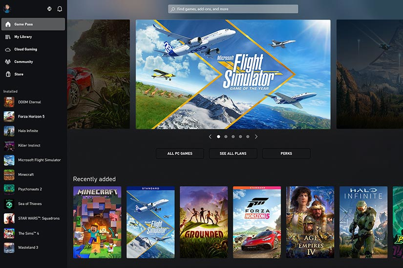

While most people think of Microsoft’s Surface Pro devices as a line of 2-in-1s, because they don’t come with a keyboard (you need to purchase it separately), that technically makes them tablets. But don’t be fooled, because thanks to Windows 11 and support for a range of 12h-gen Intel processors, Microsoft’s Surface Pros are designed for productivity.

The latest Surface Pro 9 has a beautiful display with a smooth 120Hz refresh rate and improved stereo speakers, while the inclusion of an IR facial recognition camera allows you to log in to the system in a snap. Another nice bonus is that unlike a lot of tablets, the Surface Pro 9’s SSD is user accessible, allowing you to upgrade its storage yourself whenever you want. And thanks to improvements in Windows 11, the Surface Pro 9 is better suited to life as a tablet without ever needing to attach a smart keyboard thanks to larger app icons and more touch-friendly controls.